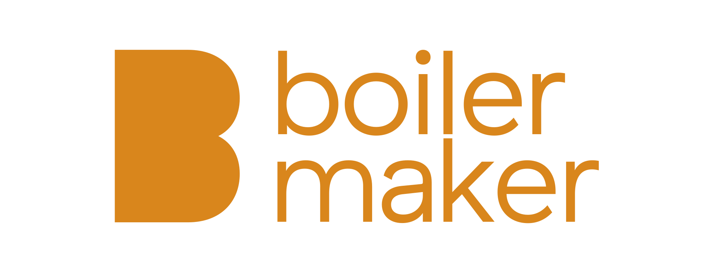
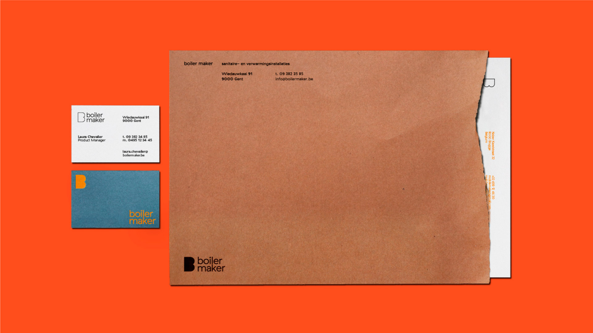
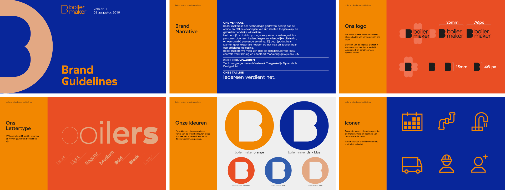
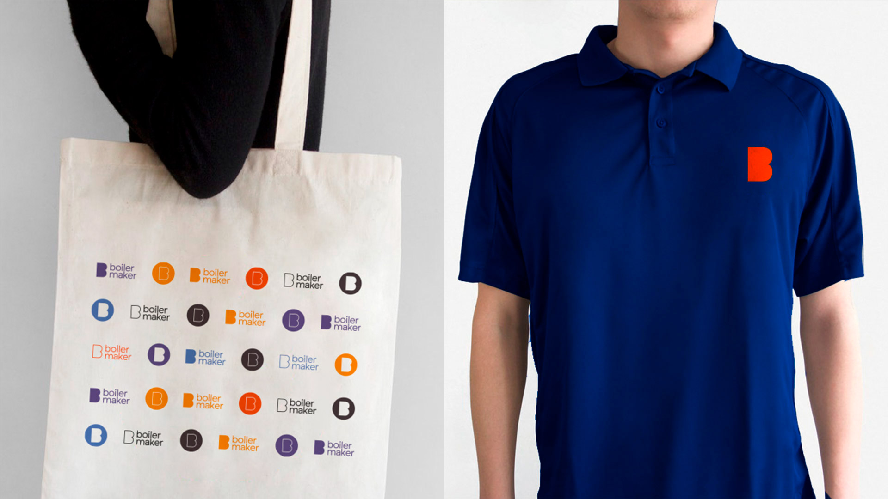
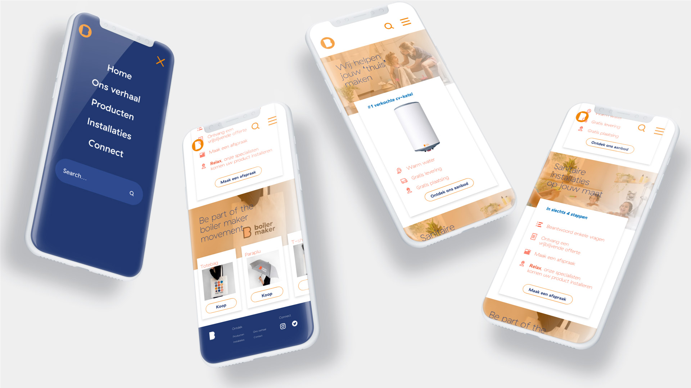
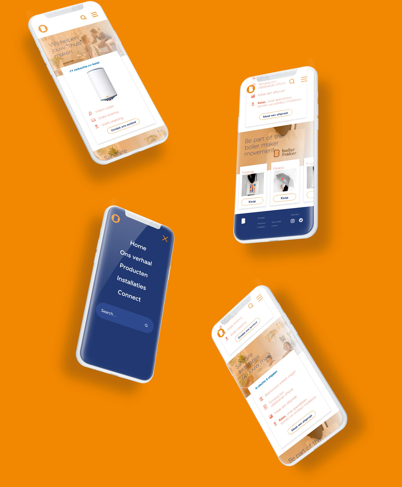
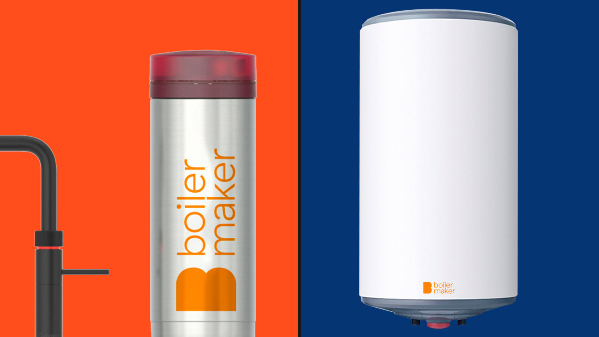

Boiler maker focust zich op wat zich afspeelt binnen het gezin. Dan vooral in de kamers waar we ons dagelijks het meest bevinden: de keuken en de badkamer. Beide zijn plaatsen waar er wordt gecommuniceerd, maar waar ook privacy gerespecteerd word. We spreken dan voornamelijk over de badkamer bij het laatste.
Meer dan gewoon sanitair.
-
Klant
boiler maker -
Sector
Sanitair
corporate -
Discipline
Branding
Print
Digitaal

De uitdaging was om iets totaal anders te ontwerpen dan wat gangbaar is in de sanitaire markt. We gingen voor een symbool, lettertype en kleuren dat nieuw en optimistisch is en klanten meer biedt dan de competitie. Wij deden ook de benaming en gingen voor iets wat in de volksmond makkelijk te gebruiken is: boiler maker. Het woord maakt duidelijk wat het bedrijf doet.


De kleuren zijn een speling op de overgebruikte primaire kleuren rood en blauw. Ze zijn speelser en ogen voor een warme combinatie. Door elk merk asset op elkaar af te stemmen verkregen we een merk identiteit die nieuw, fris en uitnodigend is.


We optimaliseren het merk nog meer door in te spelen op wat het aan de concurrentie ontbreekt: een vlotte website. We speelden in op de digitale noden van millenials en jonge gezinnen en ontwierpen een website die vlot te navigeren is en waar het evident is hoe je een afspraak maakt.

